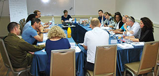

This is a six-session group consultation to help graduates with a specific challenge. As educational and social leaders, many of them are in contact with organizations abroad, and often have to present their vision and their professional work in English to colleagues from abroad, to guests, at academic and professional conferences, and in other settings. The graduates want to be able to do so with a strong sense of self-confidence and verbal competence, no less than they have when speaking in Hebrew. To meet this need, the Mandel Graduate Unit, in partnership with experts in teaching English to adults, developed a group consultation aimed at giving the graduates tools to improve their spoken and written English in areas required by their work, such as: presenting vision, developing inter-cultural partnerships, reading and writing professional materials, dialogue with donors and partners, and more.

Group Consultation on Developing English Communication Skills
2016-05-01